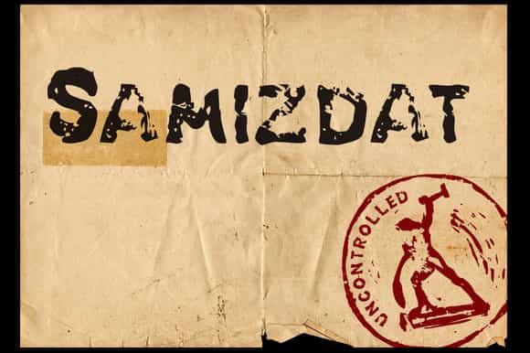
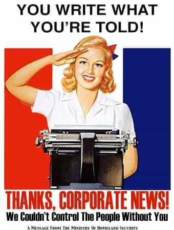

< < < Back
The Manosphere is the Modern Samizdat – Return Of Kings
Samizdat simply means self-publishing. The term sounds innocent enough. But the term has a dark historical context, one that in modern times increasingly applies to the dissidents who are gathering in ever-larger numbers around the modern-day manosphere.
In Soviet times, it referred to an era in which government-suppressed literature was “clandestinely printed and distributed.” Samizdat originated within the Russian Intelligentsia, a group which could include anyone from artists to teachers, who were engaged in disseminating ideas which ran counter to the leftist ideology of Communism.
In parallel to much of the self-publishing of today, most of the texts were personal statements, protests, or opinions which differed from the mainstream. Many suggested alternative ways of handling social problems. Others included news suppressed by the “official media” of the time.
The publishers of samizdat were subjected to harassment and surveillance of the type we are just beginning to witness in America. In 1973, in an effort to intimidate and silence its political opponents, the KGB concocted a show trial involving one of the most prominent publishers of samizdat, Victor Krasin.

Krasin Goes Up Against the State Apparatus
Krasin was an economist who had long been a critic of Marxism-Leninism, and was arrested for his opinions as early as 1949. He was sent to Ozerlag to do hard labor as a political prisoner. Krasin spent the next five years of his life in different labor camps as a political prisoner until Stalin’s death in 1954, when he was released after being “rehabilitated” by the State. He then went on to become a professor at the Central Economics and Mathematics Institute, where he continued to self-publish until he was fired for it, only to be arrested again years later for “anti-Soviet propaganda.” That arrest led to the aforementioned show trial.
In irony, as compared to today’s status quo and shifting political winds, only two weeks after Krasin’s conviction in the KGB’s show trial, the United States House and Senate adopted resolutions stating Krasin had “demonstrated enormous courage and intellectual honesty in advocating and defending the importance of fundamental civil and political liberty,” and that he had “served to illuminate the plight of hundreds of thousands of Soviet citizens.” Krasin later emigrated to the United States and became a citizen in 1981. Reading the history of Krasin, one wonders how far away from such arrests and persecutions we are in America for the crime of “illuminating” men.
Bukovsky Fights the System
Vladimir Bukovsky was another member of the samizdat. A neurophysiologist and dissident of the Marxist-Leninist movement, he started self-publishing shortly after entering Moscow University in 1960. One of his first pieces as portrayed the Soviet Union as an immoral society that no longer had moral and spiritual authority over its citizens.
For this “crime” of questioning authority and self-publishing, he was placed under investigation, and by 1961 was expelled from Moscow University. Unfazed, he continued his writing and self-publishing. By 1963, he was arrested by the KGB and convicted of anti-Soviet agitation and propaganda. Bukovsky would spend a total of 12 years in and out of Soviet prison and labor camps, and forced-treatment psychiatric hospitals. Speaking of this experience, he would later say, “I myself create it, edit it, censor it, publish it, distribute it, and get imprisoned for it.”
One of the ways Soviet psychiatric hospitals treated political opponents like Bukovsky was by diagnosing them with “sluggish schizophrenia.” After all, why would anyone oppose the greatest sociopolitical system in the world, Communism? Self-publishers like Bukovsky who didn’t agree with the party line were diagnosed as being unable to grasp reality. The Soviet psychiatrists were also told to look for traits such as “reform delusions” or “struggles for truth and justice” and refusal to submit to authority so that those disorders could also be treated.
The treatments usually involved locking political opponents up in a Special Psychiatric Hospital, and drugging them with high doses of psychiatric drugs.
Because of this spurious definition of schizophrenia, the Soviet Union had at least three times the number of schizophrenics as other nations. Bukovsky’s later appeals to Western psychiatrists helped expose the political abuse of psychiatry in the Soviet Union. (But what better way for an authoritarian state to deal with political dissidents than diagnosing them as mentally unstable.) These appeals led to reforms, including glasnost, which called for increased openness and transparency in government activities.
Once again, showing how political winds can shift dramatically from one generation to the next, the USA helped negotiate Bukovsky’s emigration from the Soviet Union. Bukovsky would end up in the UK.
America Heads Down the Primrose Path of Politically Correct Censorship

Even though today there are no official edicts as of yet damning the authors and commenters on self-publishing sites like Return of Kings, we live in an environment of feminism and political correctness that is becoming increasingly inhospitable to tradition and masculinity.
Samizdat “self-publishing” blows a huge hole in the what the media and government in the USA previously took for granted: Control of the dialogue. The gatekeepers were able to select which topics were “appropriate” to discuss, decide what emphasis to place on each topic, then frame those topics in a way that’s appropriate for their interests, and limit debate to certain prescribed limits, also suited to their interests. It’s not so easy for them to hide dissent and alternative points of view anymore. We are just beginning to see the ways in which the Internet has changed the way the world communicates ideas.
One thing is for sure, self-publishing is easier, faster, and more prevalent now than it ever could have been back in the days of the Soviet Union. Men are self-publishing politically unpopular, unapproved, rational ideas that are important to their own self-interest in increasingly large numbers and with an increasingly louder voice. What remains to be seen is how those in power will respond. Will we see arrests for the newly invented PC term “hate speech” soon? Will the government resort to outright censorship in the name of “national security?” Will Google and other web companies impose restrictions on content? I’m not sure. In any case, storm clouds are gathering on the horizon.
Read more: 21 Tips For Starting A Manosphere Blog


{kind=link}
{kind=link}